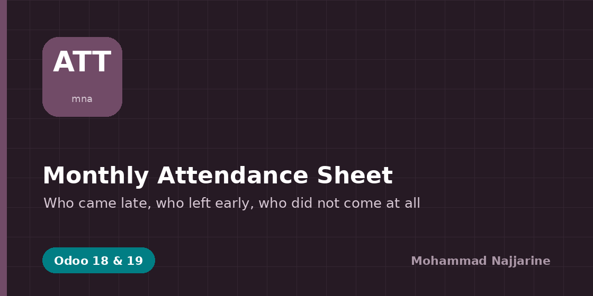
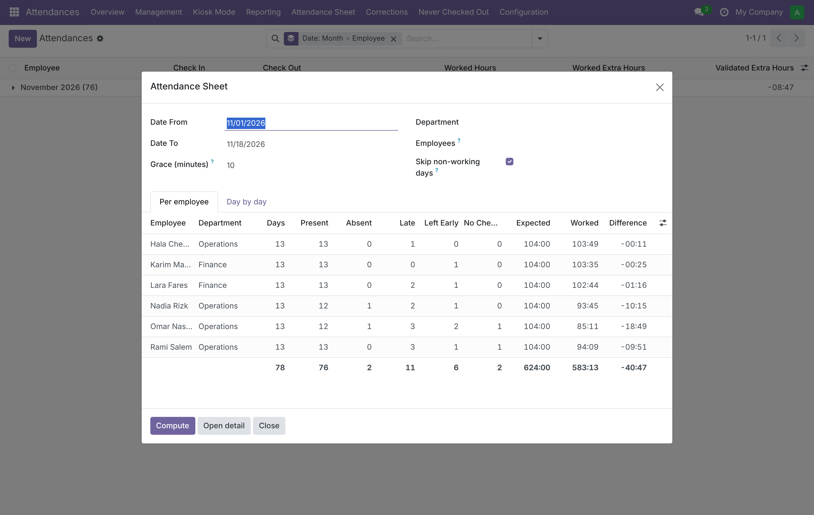
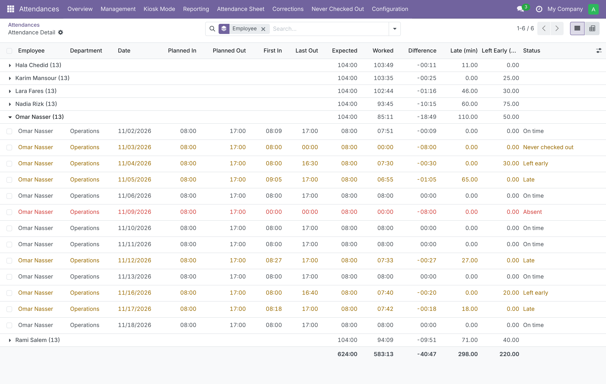

Odoo records attendances and totals the hours. What it does not do is put the day an employee worked next to the day they were supposed to work. That comparison is the whole of an attendance sheet, and without it somebody exports to a spreadsheet every month.
Free and open source under LGPL-3.
Planned in and out, first check in, last check out, expected hours, worked hours, and the difference.
Measured against each employee's own working schedule, not a company wide guess.
The same measurement at the other end of the day.
Ten minutes by default. A report that flags every two minute delay is a report nobody reads twice.
A scheduled day with no attendance at all, with the whole day shown as owed.
The days somebody forgot, which otherwise quietly spoil every hours total in the system.
Days present, absent, late and early, and the hours over or owed for the month.
The detail is an ordinary Odoo list, so it goes anywhere your spreadsheet already goes.
Times are read in each employee's own timezone, so a team spread over three countries is still right.
Each employee with days present, absent, late and early, and the hours over or owed. The figures tie back: Hala is eleven minutes late once and eleven minutes short for the month.

Open a person and every day is there: on time, late, left early, never checked out, absent. The nine minute arrival inside the grace is not flagged, but the nine minutes are still counted in the hours.

Odoo takes the lunch out of the worked hours of an attendance. Counting it as expected would show an hour owed every day for everybody, which is the fastest way to make a report nobody trusts.
The span runs from the first line of the schedule to the last, while the expected hours count only the worked intervals, so the break between them is not charged to anyone.
It reports. It never edits an attendance, so running it can never make things worse.
| Odoo | 18.0 and 19.0, Community or Enterprise |
| Depends on | Attendances only. No Enterprise module required |
| Licence | LGPL-3, free and open source |
Written and maintained by Mohammad Najjarine, Odoo consultant. Questions, bug reports and customisation requests are answered.
Message me on WhatsApp Code and issues on GitHub
Phone and WhatsApp +961 71 835279